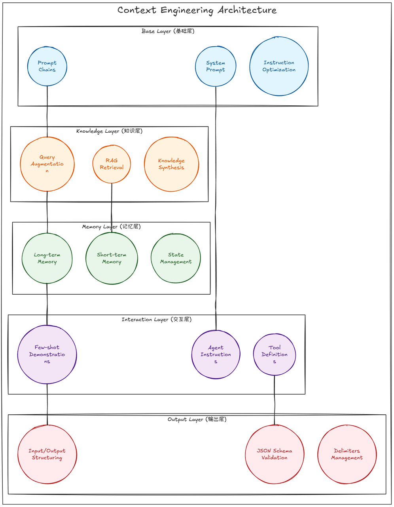

CONTEXT ENGINEERING
上下文工程 Context Engineering
01
一个真实的失败案例
某客服 Agent 的 System Prompt 写得很完善，单轮测试也全部通过，但上线两周后出现了三类事故：
| 现象 | 根因 | 归属层 |
|---|---|---|
| 对话超过 20 轮后开始"忘记"用户开头说的订单号 | 历史消息被截断，且没有摘要或状态保存机制 | 记忆层 |
| 回答退款政策时引用了 2022 年的旧文档 | 检索时没有时间或版本过滤，Top-K 结果混入过期知识 | 知识层 |
| 偶尔输出一段解释文字而不是 JSON，导致下游解析崩溃 | 输出格式只依赖自然语言要求，没有 Schema 约束和校验 | 输出层 |
一个好的 Prompt，并不能保证一个长期运行的 Agent 稳定可靠。
02
什么是上下文工程
上下文工程，是在模型的每一次调用中，把正确的信息，以正确的格式，在正确的时机放入有限上下文窗口的系统性方法。
Prompt Engineering 关注
“指令怎么写”
Context Engineering 关注
“模型这一次应该看到什么”
Context Engineering
Prompt Engineering
在本课程的讨论范围内，Prompt Engineering ⊂ Context Engineering一部分。
03
一次调用中的上下文
一次调用中的上下文，通常不只有 Prompt，还可能包含：
Context Window
1System Prompt 和用户当前的问题基础层
2多轮对话历史与任务状态记忆层
3RAG 检索到的文档知识层
4Few-shot 示例交互层
5可用工具的名称、参数和说明交互层
6工具执行结果交互层
7输出格式和安全约束输出层
04
为什么需要管理上下文
Agent 会连续调用模型。
每一步都在读取和写入上下文，早期的小错误可能在后续步骤中不断累积。上下文窗口有限。
即使窗口很大，模型对不同位置内容的利用能力也不完全相同；输入更多内容不一定得到更好的结果。无关信息会形成干扰。
过期文档、重复消息和无关工具都会降低模型找到关键信息的概率。Token 会带来成本和延迟。
上下文越长，通常调用越慢、成本越高。所以，上下文工程可以类比为 LLM 应用的“内存管理”：不是把所有信息都交给模型，而是管理哪些信息应该被写入、检索、压缩、隔离和删除。
05
上下文五层模型

06
管理上下文的五个基本动作
01
写入
把关键状态保存到会话状态、数据库或长期记忆中。
02
检索
只取回当前步骤真正需要的信息。
03
压缩
对长对话、长文档和工具结果进行摘要或裁剪。
04
隔离
让不同子任务或子 Agent 只看到各自需要的上下文。
05
校验
检查检索内容是否可信、工具参数是否正确、输出是否符合 Schema。
07
评估、调试
| 层 | 指标 | 测量方法 |
|---|---|---|
| 知识层 | 召回率 / 精确率 / 引用准确率 | 标注“问题—相关文档”数据；检查引用是否真正支持答案 |
| 交互层 | 工具调用准确率 / 参数填充正确率 | 标注“问题—期望工具及参数”数据 |
| 记忆层 | 多轮事实保持率、错误记忆率 | 第 1 轮提供事实，在第 N 轮提问；检查是否记错或串用其他用户信息 |
| 输出层 | Schema 合规率 / 解析失败率 | 用程序校验输出并统计失败次数 |
| 整体 | 任务成功率、Token 消耗、延迟、成本 | 使用端到端评估集，对比不同上下文策略 |